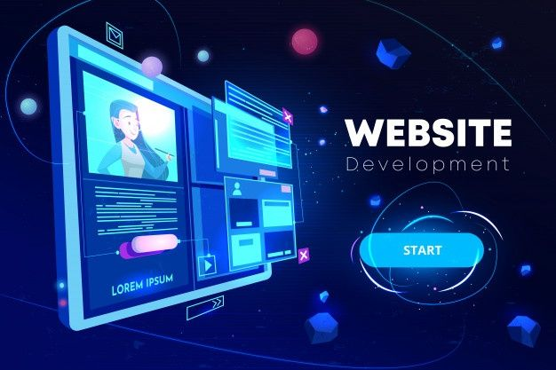
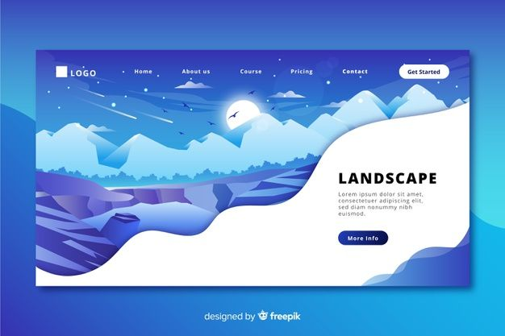

Services That I Offer :-
Web designing
As a web designer, I offer creative, responsive, and user-friendly designs that bring ideas to life. I focus on creating clean layouts, intuitive navigation, and visually appealing interfaces that align with each client's brand and goals. Whether it's a personal portfolio, business website, or e-commerce platform, I aim to design experiences that are both engaging and easy to use. I also prioritize mobile-first design and cross-browser compatibility to ensure every site performs well on all devices. With a strong understanding of design principles, UX/UI best practices, and modern tools like Figma and Adobe XD, I’m able to turn concepts into polished, functional designs that not only look great but also drive results.
Software Development
As a software developer, I offer efficient, scalable, and reliable solutions tailored to meet specific business needs. I specialize in writing clean, maintainable code and developing applications that are both functional and user-friendly. With experience in various programming languages and frameworks, I can contribute to both front-end and back-end development. Beyond coding, I bring strong problem-solving skills, a collaborative mindset, and a passion for continuous learning. I stay up to date with the latest technologies and best practices to ensure that every project I work on is optimized for performance, security, and long-term success. Whether working independently or as part of a team, I’m committed to delivering high-quality software that makes a real impact.

Responsive Website Design
As a responsive web designer, I offer tailored website designs that adapt seamlessly across all devices—from desktops and laptops to tablets and smartphones. My focus is on creating user-friendly interfaces that not only look visually appealing but also enhance the overall user experience. By using the latest technologies such as HTML5, CSS3, JavaScript, and frameworks like Bootstrap or Tailwind CSS, I ensure that your website loads quickly, functions smoothly, and maintains a consistent brand identity across platforms. In addition to design, I provide optimization services that improve performance, accessibility, and search engine visibility. Whether you're launching a new website or need to revamp an existing one, I prioritize mobile-first design principles and cross-browser compatibility.
